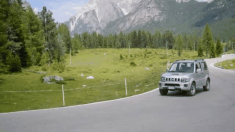
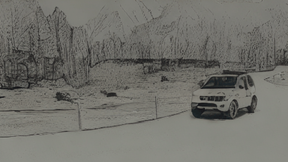
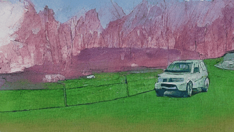
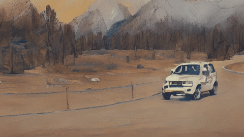
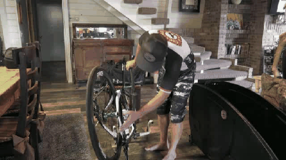
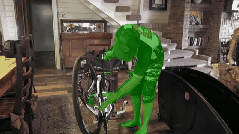

Video Instruct Diffusion
| Turn the video to Sketch Style. |  |  |
| Turn the video to WaterColor/ Oil Painting Style. |  |  |
| Apply Green to the pixels of the man holding the bike while maintaining the current state of other pixels. |  |  |
| Remove the applied haze from this video. |  |
|
| Withdraw the applied haze from this video. |  |
 |
| Apply Red to the pixels of the boy riding the bicycle while maintaining the current state of other pixels. |  |
 |
| Improve the quality of this fuzzy video. |  |
 |